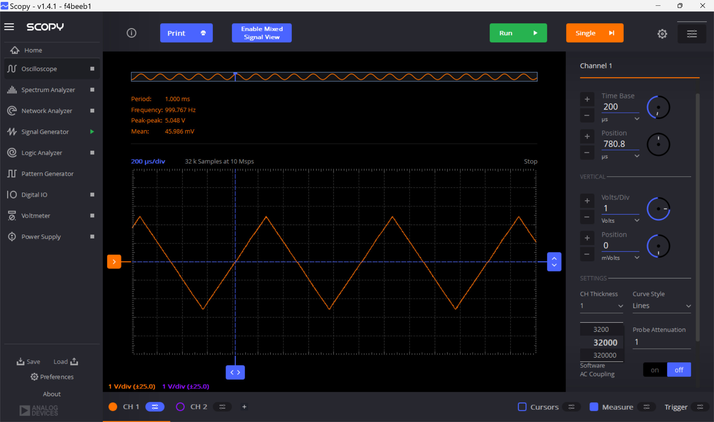

แนะนำการใช้งานเครื่องมือสร้างและวัดสัญญาณแบบพกพา ADALM2000 ในเบื้องต้น (สำหรับ Windows)#
บทความนี้กล่าวถึง การเริ่มต้นใช้งานอุปกรณ์ ADALM2000 ของบริษัท ADI และใช้งานร่วมกับซอฟต์แวร์ Scopy
Keywords: Testing & Measurement (T&M) Equipment, ADI ADALM2000, Scopy
▷ Active Learning Module MK2000 (ADALM2000)#
ADALM2000 ของบริษัท Analog Devices Inc. (ADI) จัดอยู่ในหมวดอุปกรณ์ Testing & Measurement (T&M) ซึ่งใช้ในการทดสอบวงจรและการวัดสัญญาณ เป็นอุปกรณ์ที่ออกแบบมาเพื่อการเรียนรู้และทดลองเกี่ยวกับวงจรอิเล็กทรอนิกส์และสัญญาณแอนะล็อก สามารถเชื่อมต่อกับซอฟต์แวร์ประเภท Open Source ที่มีชื่อว่า Scopy สำหรับคอมพิวเตอร์ของผู้ใช้ และใช้ในการทดสอบและวิเคราะห์ผลได้แบบเรียลไทม์ได้ อุปกรณ์มีขนาดเล็กและพกพาได้สะดวก ในการใช้งานโดยทั่วไป ก็ใช้วิธีเชื่อมต่อกับคอมพิวเตอร์ของผู้ใช้ ผ่านทางพอร์ต USB
อุปกรณ์ของ ADI ที่จัดอยู่ในกลุ่มเดียวกัน ได้แก่
- ADALM-1000
- ADALM-2000
- ADALM-PLUTO (SDR)
ฟังก์ชันหลักของ ADALM2000 มีดังนี้
- ออสซิลโลสโคป (Oscilloscope): เครื่องมือสำหรับตรวจสอบสัญญาณไฟฟ้าและแสดงผลกราฟของแรงดันไฟฟ้าในหนึ่งช่วงเวลา
สามารถวัดสัญญาณอินพุตได้ 2 ช่อง ได้แก่ขา
1+คู่กับ1-และ2+คู่กับ2-(ดังนั้นจึงวัดสัญญาณได้ทั้งแบบ Differential mode และ Singled-ended สำหรับสัญญาณแต่ละช่อง) - เครื่องกำเนิดสัญญาณ (Arbitrary Waveform Generator (AWG)): เครื่องมือสำหรับสร้างสัญญาณไฟฟ้าในรูปแบบต่าง ๆ
เช่น สัญญาณไซน์ (Sine), สามเหลี่ยม (Triangle), และสี่เหลี่ยม (Square) สามารถสร้างสัญญาณเอาต์พุตได้ 2 ช่อง
คือ
W1และW2อ้างอิงกับขาGNDของระบบ - แหล่งจ่ายไฟเลี้ยงแบบ DC (Power Supply): มีแหล่งจ่ายไฟในตัวที่สามารถปรับระดับแรงดันไฟฟ้าได้ตามต้องการ
อยู่ในช่วง +/-5V ที่ขา
V+,V-และมีขาGNDเป็นกราวนด์ของระบบ และงานได้ทั้งในโหมด Independent (ตั้งค่าแรงดันไฟฟ้าทั้งสองช่องอิสระจากกัน) และโหมด Tracking - ขาอินพุตและเอาต์พุตแบบดิจิทัล (Digital I/O): รองรับการเชื่อมต่อกับวงจรดิจิทัลต่าง ๆ
มีขา Digital I/O จำนวน 16 ขา (16 บิต)
DIO 0..15ใช้แรงดันไฟฟ้าสำหรับลอจิก +3.3V (5V Input-tolerant) - การสร้างสัญญาณดิจิทัลตามรูปแบบที่กำหนด (Pattern Generator): เครื่องมือสำหรับสร้างชุดของสัญญาณดิจิทัลแบบเรียงลำดับ เช่น เพื่อใช้ในการทดสอบวงจรดิจิทัล
- เครื่องวิเคราะห์เครือข่าย (Network Analyzer): ใช้ในการวิเคราะห์และทดสอบการตอบสนองของวงจรในด้านความถี่ (Frequency Sweep และ Frequency Response)
- เครื่องวิเคราะห์สเปกตรัมของสัญญาณ (Spectrum Analyzer): ใช้ในการวิเคราะห์สัญญาณในเชิงความถี่ โดยคำนวณ FFT ของสัญญาณ
- มีช่องสัญญาณ Digital Trigger In/Out จำนวน 2 ขา (
T0และT1) เช่น ใช้เป็นสัญญาณทริกเกอร์ (ดิจิทัล) จากภายนอก
ชิปที่สำคัญภายในอุปกรณ์ ADALM2000 (M2K)
- AMD/Xilinx ZYNQ Z7010 SoC (dual-core 32-bit ARM Cortex-A9 processor + FPGA) ทำงานด้วยระบบปฏิบัติการ Embedded Linux
- AD9963 เป็นไอซี ADC / DAC เชื่อมต่อด้วยบัส SPI ความเร็วสูง
- ADF4360–7 เป็นไอซีสำหรับการสร้างสัญญาณที่มีคาบ ความถี่สูง และเชื่อมต่อด้วยบัส SPI เช่นกัน
นอกจาก Scopy ซอฟต์แวร์ที่เป็น Open Source ของบริษัท ADI และเกี่ยวข้องกับการใช้งาน ADALM2000 แบ่งตามลำดับชั้นของ Software Layers ได้แก่
- ไลบรารี libiio (Industrial Input/Output Library (IIO)) สำหรับโค้ดภาษา C (ใช้ในการเชื่อมต่อกับอุปกรณ์ตามรูปแบบที่เรียกว่า Linux Industrial Input/Output Subsystem) - ไลบรารี libm2k สำหรับภาษา C/C++ สำหรับการเชื่อมต่อกับอุปกรณ์ M2K และมีส่วนเชื่อมต่อสำหรับภาษา Python และ MATLAB ด้วย - Wiki - API
รูป: อุปกรณ์ ADALM2000 และฟังก์ชันหลักของอุปกรณ์
รูป: แผนผังแสดงตำแหน่งขาคอนเนกเตอร์ของอุปกรณ์ ADALM2000
▷ การติดตั้งซอฟต์แวร์ Scopy สำหรับ Windows#
เริ่มต้นให้ดาวน์โหลดไฟล์สำหรับการติดตั้งและใช้งาน Scopy ดูรายละเอียดได้จาก Scopy Wiki
- เป็นซอฟต์แวร์แบบ Open Source เขียนโค้ดด้วยภาษา C/C++ (Qt framework)
- ใช้ได้กับระบบปฏิบัติการ Windows, Linux, Mac OSX, Android
- เวอร์ชันล่าสุดที่ได้ทดลองในบทความนี้ v1.4.1 (Release date: Aug 3, 2022)
- ดาวน์โหลดได้จาก https://github.com/analogdevicesinc/scopy/releases
- ไฟล์สำหรับ Windows มี 2 ตัวเลือก
Scopy-v1.4.1-Windows-portable.zip(Portable, no installation)scopy-v1.4.1-Windows-setup.exe(Windows Installation File)

เมื่อดาวน์โหลดและติดตั้งไฟล์ Scopy สำหรับ Windows แล้ว ให้ติดตั้ง Device Drivers และในไดเรกทอรีของ Scopy จะมีไฟล์ที่เกี่ยวข้องสำหรับการติดตั้ง
รูป: การติดตั้ง Device Drivers สำหรับระบบปฏิบัติการ Windows 10 / 11
เมื่อได้เชื่อมต่ออุปกรณ์ ADALM200 กับคอมพิวเตอร์ของผู้ใช้ผ่านทางพอร์ต USB ให้เปิดใช้งานโปรแกรม Scopy แล้วกดลองปุ่ม Connect และ Identify

รูป: หน้าต่างหลักของโปรแกรม Scopy เมื่อเปิดใช้งานครั้งแรก

รูป: สถานะการเชื่อมต่อกับอุปกรณ์ ADALM200 และพร้อมใช้งาน
ถ้าต้องการกดปุ่ม Calibrate จะต้องให้แน่ใจว่า ไม่มีการเชื่อมต่ออุปกรณ์ที่ขา Analog I/O ใด ๆ ก่อนทำขั้นตอน Calibrate
▷ การสร้างสัญญาณแอนะล็อกและวัดสัญญาณ#
ถัดเป็นไปตัวอย่างการทดลองสร้างสัญญาณเอาต์พุตซึ่งเป็นสัญญาณแอนะล็อกและมีคาบ ผู้ใช้สามารถเลือกได้หลายแบบ เช่น การสร้างสัญญาณรูปคลื่นสามเหลี่ยม (Triangle) โดยจะต้องกำหนดความถี่ (Frequency) แอมพลิจูด (Amplitude) ระดับแรงดันออฟเซต (DC Offset) และเลือกช่องสัญญาณเอาต์พุตซึ่งมี 2 ช่อง ในตัวอย่างนี้ จะเลือกใช้เพียง 1 ช่อง คือ W1 และอ้างอิงกับ GND ของระบบ

รูป: ตัวอย่างการสร้างสัญญาณสามเหลี่ยม แอมพลิจูด Vpp = 5V ความถี่ 1kHz
เมื่อสร้างสัญญาณเอาต์พุต โดยตั้งค่าและกดปุ่ม Run สำหรับฟังก์ชัน Signal Generator แล้ว ถัดไปให้ไปตั้งค่าใช้งานฟังก์ชัน Oscilloscope ซึ่งมี 2 ช่องอินพุตให้เลือกใช้งาน ในตัวอย่างนี้ จะเลือกใช้เพียง 1 ช่อง คือ 1+ คู่กับ 1- ดังนั้นในกรณีนี้ ให้นำขา 1+ ไปต่อกับ W1 และขา 1- ไปต่อกับ GND
ผู้ใช้จะต้องตั้งค่าการใช้งานออสซิลสโคป เช่น Volt/div และ Time/div การตั้งค่า Trigger เช่น Trigger Type เช่น Rising | Falling | Any Edge และ Trigger Voltage Level เป็นต้น
รูป: ตัวอย่างการวัดสัญญาณด้วยออสซิลโลสโคป

รูป: ตัวอย่างการตั้งค่า Memory Depth (จำนวนของข้อมูลจากการชักตัวอย่างที่นำมาเก็บลงในหน่วยความจำ) ซึ่งมีหลายค่าให้เลือกใช้
ลองเปลี่ยนรูปคลื่นสัญญาณ และตั้งค่าพารามิเตอร์ของสัญญาณ
รูป: ตัวอย่างการเลือกรูปคลื่นสัญญาณสำหรับ Signal Generator
รูป: ตัวอย่างการเลือกใช้รูปคลื่นสัญญาณสี่เหลี่ยม (Square) ความถี่ 1MHz แอมพลิจูด Vpp = 3V ตั้งค่า DC offset = 1.5V เพื่อให้ได้ช่วงแรงดันไฟฟ้าในช่วง 0V ~ 3.3V
รูป: ตรวจสอบการตั้งค่าสัญญาณด้วยออสซิลโลสโคป
ถัดไปลองเลือกใช้สัญญาณรูปคลื่นไซน์ ความถี่ 1kHz แล้วใช้ฟังก์ชัน Spectrum Analyzer วิเคราะห์สัญญาณเชิงสเปกตรัม
รูป: การตั้งค่สัญญาณรูปไซน์ ความถี่ 1kHz
รูป: ตรวจสอบสัญญาณด้วยออสซิลโลสโคป
รูป: แสดงกราฟ FFT Spectrum และช่วงความถี่ในการแสดงผลให้เหมาะสม
▷ การวัดสัญญาณดิจิทัลและแปลงโค้ดด้วย Protocol Analyzer#
ถัดไปเป็นตัวอย่างการใช้งานฟังก์ชัน Logic Analyzer โดยใช้เพียงสัญญาณหนึ่งช่องอินพุต
DIO 0 และวัดสัญญาณที่ถูกส่งออกมาจากโมดูล USB-Serial (Baudrate: 115200)
และลองส่งข้อมูลไบต์เป็นตัวอักขระ A (รหัส ASCII เท่ากับ 0x41)
ลองตั้งค่า Sample Rate 10MHz จำนวนข้อมูล 3000 samples
ตั้งค่า Delay นับจากเวลาที่เกิด Trigger Event ย้อนหลังไป 1000 Samples
เลือกชนิดของ Trigger เป็น Falling Edge สำหรับช่องอินพุต DIO 0
และเปิดใช้งาน Decoder: UART
รูป: ตัวอย่างการใช้งานฟังก์ชัน Logic Analyzer เพื่อวิเคราะห์สัญญาณ UART
อีกตัวอย่างหนึ่งเป็นการใช้ Logic Analyzer ที่ช่องอินพุต DI0 0
และ DIO 1 สำหรับ SCL (Serial Clock) และ SDA (Serial Data) ของสัญญาณบัส I2C
ตามลำดับ
ตั้งค่า Sample Rate: 5Msps และ Number of Samples: 20k มีการเปิดใช้งานฟังก์ชัน Decoder สำหรับ I2C เพื่อช่วยในการวิเคราะห์การทำงานจากสัญญาณ SCL และ SDA ได้ง่ายขึ้น
ในกรณีนี้สัญญาณทดสอบได้จากการสื่อสารข้อมูลไปยังโมดูล MCP4725 I2C DAC (I2C speed: 400kHz, 7-bit Device Address: 0x60)
รูป: ตัวอย่างการตั้งค่าใช้งาน ตัวอย่างสัญญาณ SCL และ SDA ด้วย Scopy
▷ กล่าวสรุป#
บทความนี้นำเสนอการเริ่มต้นใช้งานอุปกรณ์ ADALM2000 ของบริษัท ADI และใช้งานร่วมกับซอฟต์แวร์ Scopy โดยติดตั้งใช้งานสำหรับระบบปฏิบัติการ Windows 11 จากการทดลองใช้งานทั้งฮาร์ดแวร์และซอฟต์แวร์ ก็พบว่า สามารถใช้งานได้ง่ายและสะดวก สามารถใช้เป็นเครื่องมือวัดสัญญาณและทดสอบแบบพกพาได้ดี
This work is licensed under a Creative Commons Attribution-ShareAlike 4.0 International License.
Created: 2024-10-13 | Last Updated: 2024-10-13